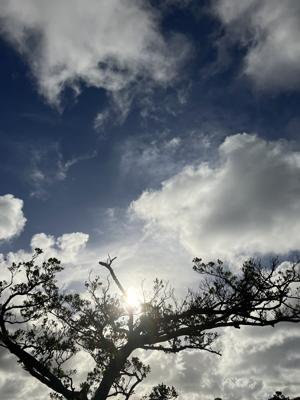
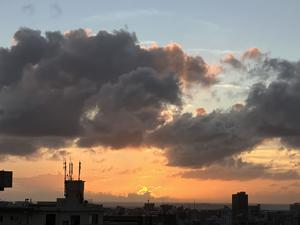

うるがいの話 ある日
最新: ムコです【うるがいの話 ある日】とは 一日だけのプログです
『うるがいの話』の最新一日だけのプログで、通信料が少なく経済的だ。カニの画像をクリックすると全ての日付が載る『うるがいの話』サイトを表示します
|
|
【うるがいの話】 うるがい(ｳﾙｶﾞｲ urugai)とは、『もずくがに』の名前でとても大きくなります。 |
|---|---|
|
|
【カミマヤーの話】 猫のことを方言でマヤーといいます。カミマヤー（kamimayaa）とは、神の猫のことです。 |
|
【たながぁの音楽】 たながぁ（ﾀﾅｶﾞｰ tanagaa）とは手長えびのことで、何種類かあり大きいのは車 エビぐらいになります。 |

|
【ぶながぁの話】 ぶながぁ(ﾌﾞﾅｶﾞｰ bunagaa)とは、赤い髪の毛、赤い身体、そして身長は１ｍ２０ｃｍ ぐらい、川の蟹を食べているの目撃された。場所は沖縄県国頭郡大宜味村のと ある村僕の隣近所に住んでいる爺さんから、聞いた話です。 |
|
|
【ギーマの話】 ギーマ(giima)とは、山原の里山に咲くスズランに似た、 花を付けます。実は食べられます、 気が付くと口の周りが紫になっています。 |
2024年07月29日 (月）ムコです
21:22
 
先生、座薬を入れても痛いですけどと言うけど先生に無視されたと、先々週
の尿路結石の話を、県立病院の待合室でお義母さんに話していると、『子供
さんですか？』と突然向かいの席から、女性の人が話に割り込んで来た。い
いえ、ムコです。『いいですね、私８５才で一人でここにいます』と訴える
ように話した。普段は、何度もトイレに行きたいというお義母さん、今日は
何故か検尿がとれず、さりげなくポカリスエットなど水分をとらさせる。や
がて１１時前、さすがにヤバイゼと頑張って！と検尿へ激励する。トイレか
らヨメが、検尿カップをかざす、ＯＫ。ホッとするがこのロスは大きく響く
診察が終わったのは、午後の１３時半頃。ヨメが、処方箋を貰うため二人か
ら離れた場所にいる、お義母さん『トイレに行きたいだけど』と、車イスの
まま、トイレに一緒に入るムコである。『あんたのお母さん（亡くなった私
の母親）は、元気ね？』と言われたとき、さすがに？・・、ヨメの顔を見て
ん、元気だよと答える。
刺身が食べたと言っていたので、病院の帰りに刺し身を買い、私の家で刺し
身を食べる。７５０円の刺身を５分程で完食、あとは沖縄ソバ、レザートに
アイスクリームと１５時半に施設に戻る。こうして、介護に一日は過ぎてい
った。
２１時１６分 ビットコインの総資産 ￥３０、９９４（↑９０１）